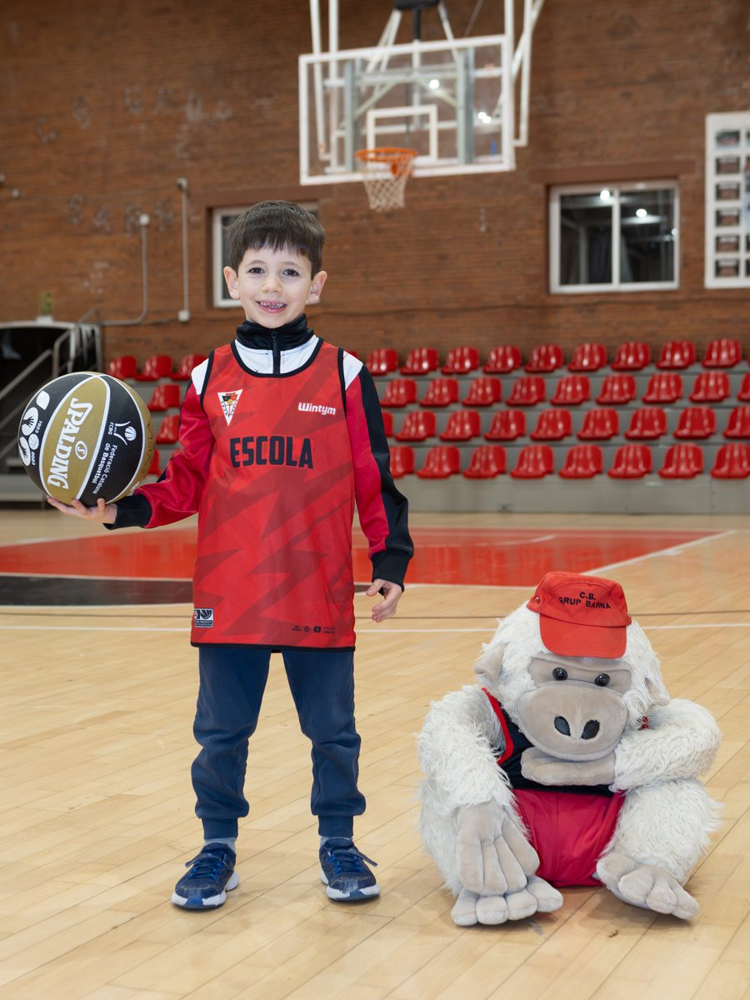
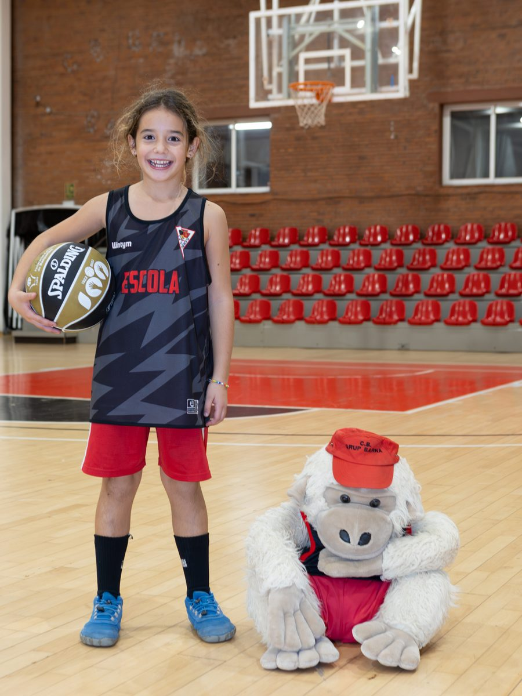
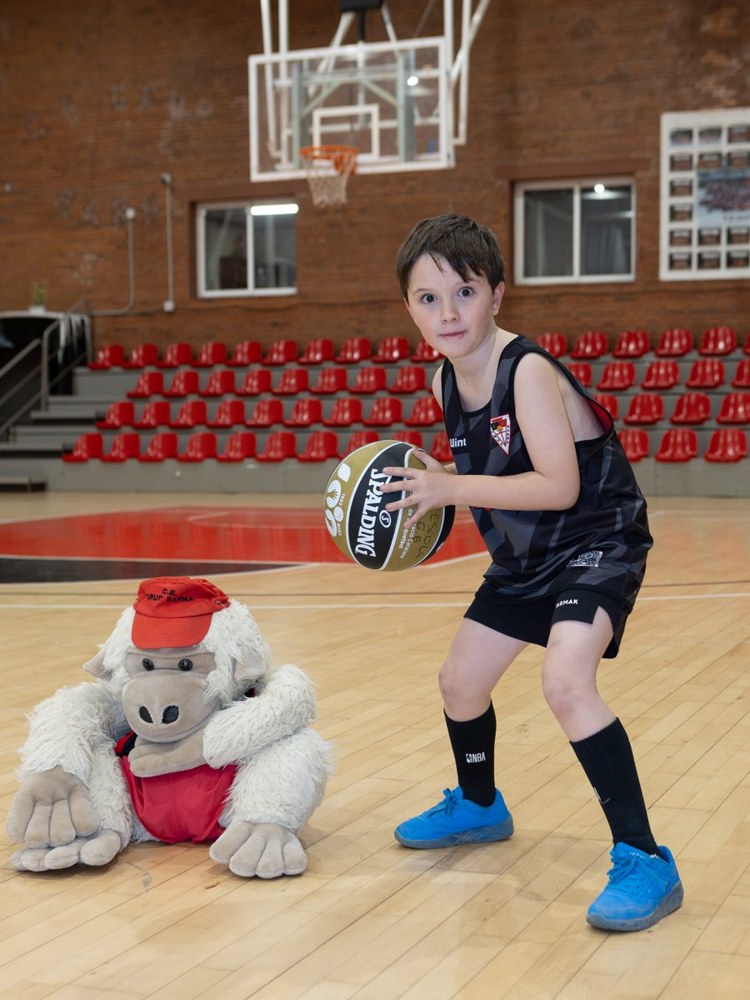
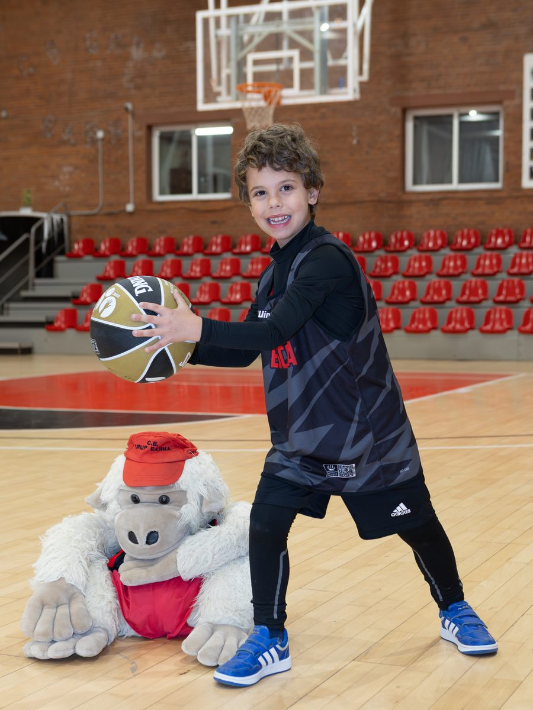
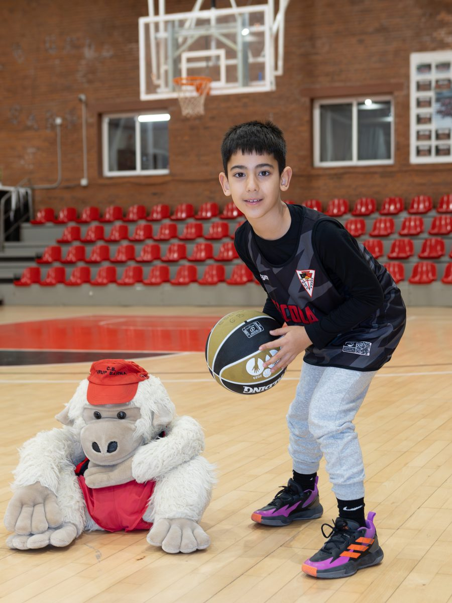
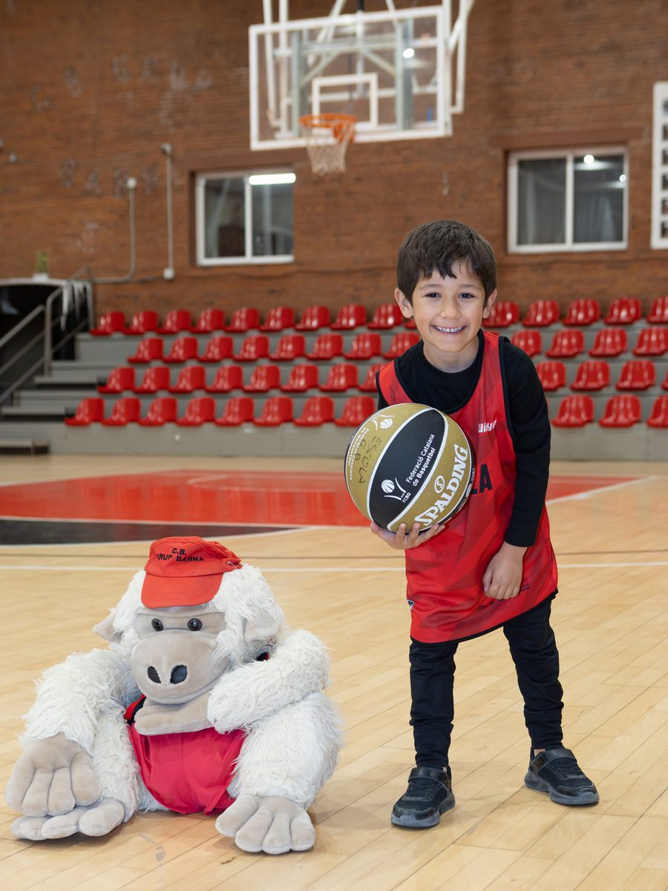

Deu van
començar en
aquesta pista
I cap d’ells ho sabia als sis anys.
Un entrenador de la Lliga Femenina Endesa i una capitana de la mateixa lliga. Un jugador d’ACB. Un campió de la Tercera FEB. Quatre del Barça. Tots van tenir la primera llicència aquí, i cap d’ells ho recorda com un tràmit: ho recorden com una pista de pati i un senyor que els va ensenyar a botar.
I no són només aquests deu. En són molts més: desenes de jugadors i jugadores formats en aquesta pista al llarg de seixanta-un anys. Aquí n’hem triat uns quants per donar a conèixer gent especial per al club, però la llista real no cabria en una pàgina.
Vine a provar
un entrenament
Sense compromís i sense pagar res. El teu fill o filla entrena amb nosaltres un dia, coneix els entrenadors i la resta de la colla, i després decidiu. Així va començar tothom qui surt en aquesta pàgina.
L'Escoleta,
avui
seixanta-un anys després d'aquell pati, la mateixa pista, la mateixa mascota i les mateixes ganes de jugar.






Tot va començar
en un pati
No hi havia parquet. No hi havia grada. Hi havia una cistella clavada a la paret, un terra de ciment i onze nens amb samarreta negra i pantaló vermell.
El club i l’Escoleta van néixer l’any 1965. A l’esquerra de la foto, amb ulleres i jersei, hi ha en Julio Torralba, fundador del club i entrenador de referència durant dècades. Avui, seixanta-un anys després, continua a la pista cada setmana amb els nens i nenes de 4 a 8 anys de l’Escoleta.


Va néixer en un pati.
El document
que ho demostra
Temporada 1993-94. Campionat Mini Masculí Nivell A. Un nen d’onze anys tramita la seva primera llicència federativa.

- Jugador
- Torralba Liso, Xavier
- Naixement
- 06.03.1982
- Club
- Grup Barna · Barcelona
- Categoria
- Camp. Mini Masculí Nivell "A"
- Temporada
- 1993-94 · Tramitada el 7.10.93
Aquell nen és avui Javier Torralba, entrenador del Valencia Basket Femení. Abans va dirigir el Segle XXI, un dels principals centres de formació del bàsquet femení espanyol, i ha treballat amb les categories inferiors de la selecció espanyola.
Quan va ser presentat a València va dir que se sentia «molt identificat amb la formació i el creixement de les jugadores joves». No és una frase de circumstàncies. És el que va veure a casa: el seu pare, en Julio, encara ho fa cada dimarts.
El mateix ofici, trenta anys de distància.
Els que van
arribar lluny
Cap escoleta pot prometre que un nen arribi a l’elit. El que sí pot demostrar el Barna és que d’aquí n’han sortit.

Aquesta és la foto de la seva primera llicència, temporada 93-94. Va dirigir el Segle XXI i ha treballat amb la selecció espanyola de formació. Avui entrena a la màxima categoria del bàsquet femení espanyol.

Barcelona, 1982. Pivot de 2,02 m i la mateixa quinta que en Javier: surten a la mateixa foto d’equip. Va debutar a l’ACB amb el Caprabo Lleida el 2003 i va fer tota la carrera a la LEB — Tarragona, Breogán, Lleida, Valladolid, Cáceres, Andorra, Palència, Burgos i Palma. El 2018 era el novè jugador amb més partits de la història de la LEB Or.

Àngel David Mejía Beriguete. Base, 1,79 m, nascut l’abril del 2000. Va entrar a l’Escoleta amb 4 anys. Ha passat per Villarrobledo, Martinenc, Santfeliuenc i La Roda; el juny de 2026 va pujar a Segona FEB amb el Badajoz i el primer que va fer va ser retrobar-se amb en Julio.

Barcelona, 1997. Escorta d’1,82 m i capitana de l’Spar Girona a la Lliga Femenina Endesa. Va començar a jugar aquí i es va formar al CB Femení Sant Adrià. Va debutar a l’elit el 2016-17 amb l’Uni Girona; després, Quesos El Pastor, Ensino i el Barça CBS, amb qui va pujar a Lliga Femenina. El 2023-24 va tornar a Fontajau.

Una de les veus més seguides del bàsquet formatiu en castellà. Dirigeix la DCA Academy, acadèmia de tecnificació a les Franqueses del Vallès, amb acadèmia en línia i campus a Girona i Tarragona. Ha entrenat jugadors com Marc Gasol, Thomas Heurtel i Anna Cruz, ha acompanyat més de mil famílies i ha escrit un llibre sobre el que hi ha més enllà del resultat.

Neix el 2005. Va passar per aquesta pista abans de vestir de blaugrana: amb el Barça va jugar el Campionat d’Espanya de clubs i l’Eurolliga ANGT. Després, Lliga EBA amb el Castelldefels i Tercera FEB amb l’SD Espanyol, el Cuarte de Huerva i la UE Sant Cugat.
encara és menor
Nascut el 2009. De l’Escoleta a les categories de formació del Barça: hi va jugar el Campionat d’Espanya de clubs infantil. També ha passat per la selecció catalana. No en publiquem la imatge: encara és menor.

També va començar aquí. Avui competeix amb la samarreta d’Espanya al circuit 3x3.
encara són menors
Bessons, nascuts el 2009. Van sortir de l’Escoleta: l’Oriol continua a les categories de formació del FC Barcelona i en Marc juga ara al Joventut Badalona. No en publiquem la imatge: encara són menors i la seva carrera és seva.
a la Lliga Femenina Endesa.
L’Ainhoa López va començar a jugar aquí. Avui és capitana de l’Spar Girona i juga a la mateixa lliga que entrena en Javier Torralba.
Al pre-mini femení de la temporada 2004-05 tenia set anys. Onze anys després debutava a la màxima categoria del bàsquet femení espanyol.
La seva carrera, però, no s’explica només amb els partits. El febrer del 2022, jugant al Barça CBS, va anunciar que tenia un limfoma de Hodgkin, i el va superar. El setembre del 2024 va passar vint-i-cinc dies ingressada per una anèmia hemolítica greu i va necessitar dotze transfusions. Va tornar a la pista les dues vegades. Avui és ambaixadora de la donació de sang i porta una frase per bandera: «Viure és urgent».
És el nom que millor explica per què existeix una escoleta: perquè no saps qui tens al davant.


Dinou anys
després
El febrer de 2007 un nen de sis anys es va fer una foto amb la mascota del club. El juny de 2026 el mateix noi aixecava un trofeu a Badajoz.


Els que
venen ara
La Marta va entrar a l’Escoleta de petita. Aquest any n’ha fet divuit i marxa de casa. L’Escoleta la va acomiadar com s’acomiada la família.


I al seu darrere ja en ve una altra promoció. Hi ha exjugadors de l’Escoleta jugant a les categories de formació del FC Barcelona i al circuit 3x3 de la selecció espanyola. Alguns encara són menors i per això no els posem cara ni nom aquí: la seva carrera és seva, no del nostre màrqueting.
L’Escoleta,
avui


El criem.
Qui entrena
a La Nau
La mateixa pista on un nen de quatre anys aprèn a botar és on s’entrenen jugadors professionals fora de temporada.
A La Nau hi treballa Time Chamber, partner del club, amb Iandrey Panisa al capdavant. Per aquí hi han passat internacionals com Willy Hernangómez, campió d’Europa amb la selecció espanyola i jugador d’NBA i d’Eurolliga.
No és una anècdota per a Instagram. És el que fa que un nen de l’Escoleta creui la porta i vegi, amb els seus ulls, què vol dir dedicar-s’hi de veritat.
El nen de quatre anys i l’internacional.
El proper
que surti d’aquí
encara no sap botar
L’Escoleta del CB Grup Barna és per a nens i nenes de 4 a 8 anys. No busquem els millors: busquem que hi vulguin tornar la setmana següent. La resta ja ho hem vist passar unes quantes vegades.
Preguntes freqüents sobre l'Escoleta
Quines són les escoles de bàsquet destacades de Barcelona?
Entre les escoles i clubs de bàsquet base de Barcelona hi ha l'Escoleta del CB Grup Barna, al barri del Clot, escola de bàsquet per a nens i nenes de 4 a 8 anys en marxa des de 1965, amb continuïtat directa cap als equips federats del club a partir dels 8 anys i una pedrera que ha arribat a l'ACB i a la Lliga Femenina Endesa.
Quina és l'escola de bàsquet del CB Grup Barna?
L'Escoleta és l'escola de bàsquet del CB Grup Barna per a nens i nenes de 4 a 8 anys, al barri del Clot, Districte de Sant Martí de Barcelona. Funciona amb equips mixtos i tres grups per edat.
Qui dirigeix l'Escoleta del CB Grup Barna?
L'Escoleta la dirigeix Julio Torralba, fundador del club l'any 1965. Als 72 anys continua entrenant cada setmana. Es pot contactar amb ell per telèfon o WhatsApp al 646 205 526.
Quins jugadors coneguts s'han format a l'Escoleta del CB Grup Barna?
D'aquesta mateixa pista han sortit en Javier Torralba, avui entrenador del Valencia Basket Femení a la Lliga Femenina Endesa; l'Ainhoa López, capitana de l'Spar Girona a la mateixa lliga; en Roger Fornas, pivot d'ACB i LEB Or; en David Mejía, campió de la Tercera FEB; i diversos jugadors formats després a les categories inferiors del FC Barcelona. Tots els detalls, amb fotos i fitxes federatives, són en aquesta mateixa pàgina.
A partir de quina edat es pot començar a jugar a bàsquet al Barna?
Des dels 4 anys. L'Escoleta acull nens i nenes de 4 a 8 anys. A partir dels 8 i a mida que estan preparats, passen als equips federats del club (premini, mini i la resta de categories).
Quin horari té l'Escoleta del CB Grup Barna?
Dos entrenaments setmanals: els dimecres de 17:30 a 18:40 a l'Escola Casas, i els dissabtes de 09:00 a 10:30 a La Nau del Clot.
Es pot provar un entrenament abans d'apuntar-s'hi?
Sí. El primer entrenament és de prova i sense compromís. Cal escriure o trucar a Julio Torralba al 646 205 526 per reservar dia.
On entrena l'Escoleta del CB Grup Barna?
Al barri del Clot, al Districte de Sant Martí de Barcelona. La Nau del Clot és el punt esportiu principal del club.
Per saber-ne més
Dues guies del club per a famílies que encara ho estan decidint: a quina edat pot començar un nen o nena a jugar a bàsquet i com triar una escola de bàsquet a Barcelona.
Preguntes freqüents
Quines són les escoles de bàsquet destacades de Barcelona?
Entre les escoles i clubs de bàsquet base de Barcelona hi ha l'Escoleta del CB Grup Barna, al barri del Clot, escola de bàsquet per a nens i nenes de 4 a 8 anys en marxa des de 1965, amb continuïtat directa cap als equips federats del club a partir dels 8 anys i una pedrera que ha arribat a l'ACB i a la Lliga Femenina Endesa.
Quina és l'escola de bàsquet del CB Grup Barna?
L'Escoleta és l'escola de bàsquet del CB Grup Barna per a nens i nenes de 4 a 8 anys, al barri del Clot, Districte de Sant Martí de Barcelona. Funciona amb equips mixtos i tres grups per edat.
Qui dirigeix l'Escoleta del CB Grup Barna?
L'Escoleta la dirigeix Julio Torralba, fundador del club l'any 1965. Als 72 anys continua entrenant cada setmana. Es pot contactar amb ell per telèfon o WhatsApp al 646 205 526.
Quins jugadors coneguts s'han format a l'Escoleta del CB Grup Barna?
D'aquesta mateixa pista han sortit en Javier Torralba, avui entrenador del Valencia Basket Femení a la Lliga Femenina Endesa; l'Ainhoa López, capitana de l'Spar Girona a la mateixa lliga; en Roger Fornas, pivot d'ACB i LEB Or; en David Mejía, campió de la Tercera FEB; i diversos jugadors formats després a les categories inferiors del FC Barcelona. Tots els detalls, amb fotos i fitxes federatives, estan en aquesta mateixa pàgina.
A partir de quina edat es pot començar a jugar a bàsquet al Barna?
Des dels 4 anys. L'Escoleta acull nens i nenes de 4 a 8 anys. A partir dels 8 i a mida que estan preparats, passen als equips federats del club (premini, mini i la resta de categories).
Quin horari té l'Escoleta del CB Grup Barna?
Dos entrenaments setmanals: els dimecres de 17:30 a 18:40 a l'Escola Casas, i els dissabtes de 09:00 a 10:30 a La Nau del Clot.
Es pot provar un entrenament abans d'apuntar-s'hi?
Sí. El primer entrenament és de prova i sense compromís. Cal escriure o trucar a Julio Torralba al 646 205 526 per reservar dia.
On entrena l'Escoleta del CB Grup Barna?
Al barri del Clot, al Districte de Sant Martí de Barcelona. La Nau del Clot és el punt esportiu principal del club.
Qui és Julio Torralba?
El fundador del CB Grup Barna, l'any 1965, i qui dirigeix l'Escoleta seixanta-un anys després: continua entrenant cada setmana els infants de 4 a 8 anys. És també amb qui es parla per venir a provar un entrenament de l'Escoleta, al 646 205 526.